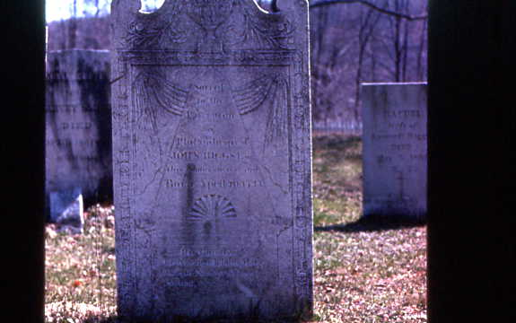

#7 Gravestone of John Riggs
At least the Riggs gravestones
are still
standing in Oxford. This is the gravestone of John
Riggs, Esquire in the Congregational cemetery. The ornate
nature of
the stone and the fancy inscription show he was a wealthy
and important
man in the community.
He was active in the American Revolution,
marching
to the Lexington Alarm in Boston. He was captain of Oxford’s
local
militia. He also served in the defense of New Haven when the
British
attacked that city in 1779.
John Riggs was also active in the
community,
and served as moderator of the first town meeting held in
Oxford after
it was incorporated as a separate town.
However, his tombstone doesn’t mention his
military
service -- it just notes he was a deacon in the
Congregational
church. Apparently, at the time of his death, local
people hadn’t
realized the significance of the war they had lived through,
and never
thought to include mention he was a soldier of the War of
the
Revolution.